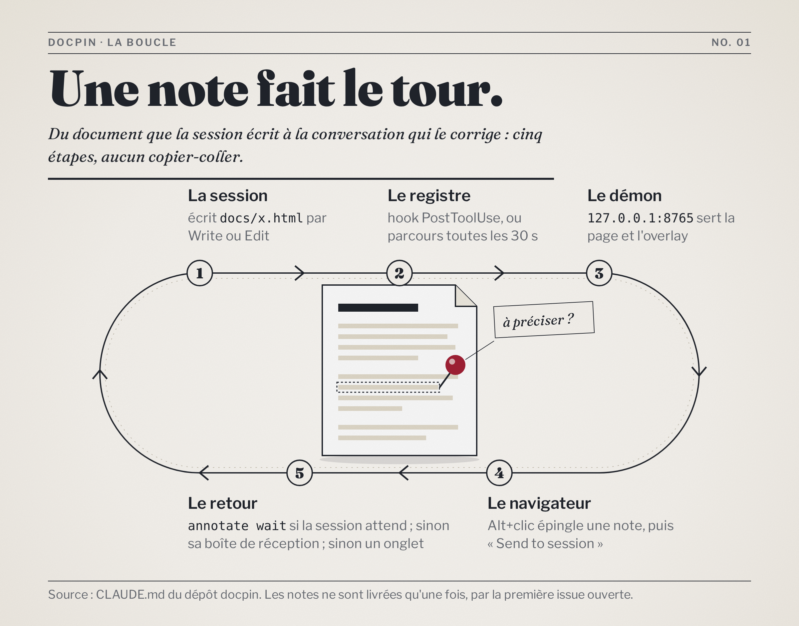
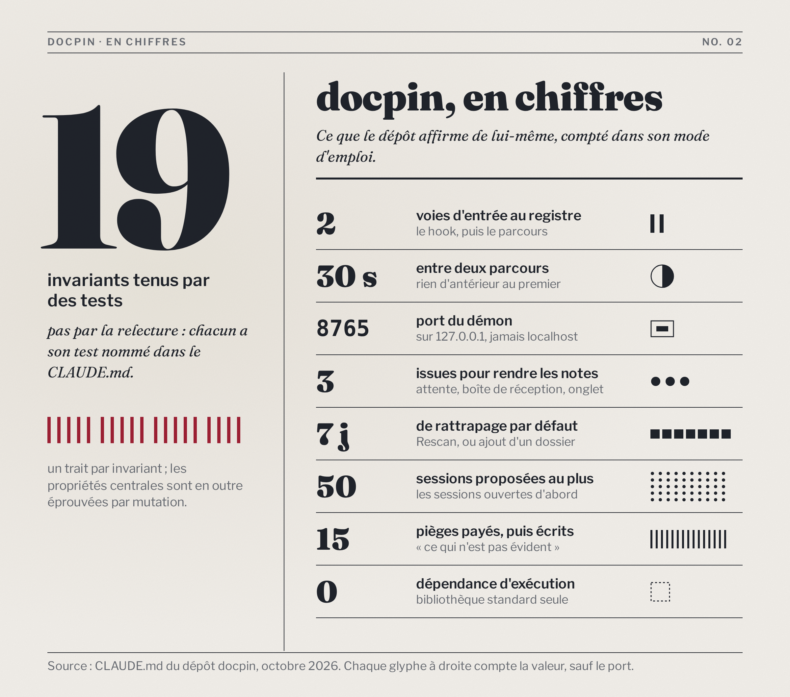

Avec ou sans epic-infographics
Le même sujet — la boucle de docpin — dessiné quatre fois : deux figures produites comme une session le fait par défaut (SVG en ligne), et les deux mêmes produites avec le skill tiers epic-infographics (HTML rendu en PNG). Mesuré le 2026-10-12, pour décider s'il s'installe sur la seconde machine et s'il entre dans le package docpin.
contre 3 min 50 s
infographies.md lui confie déjà.1. Le schéma de mécanisme : la boucle
sans SVG en ligne, couleurs du document 1 min 23 s · 4,2 Ko
avec epic-infographics, langage editorial 2 min 25 s · PNG 4,3 Mo · source figures/boucle-epic.html

Le skill impose ce que la version par défaut n'a pas : un titre et un chapô dans la figure, un objet qui porte le sujet (la page et son épingle), une piste numérotée qui se lit sans légende. La version par défaut dit la même chose plus sèchement, mais elle dit une chose de plus : les trois issues du retour sont tracées, alors que l'image les range dans une phrase.
2. La planche de chiffres
Comptés dans le CLAUDE.md du dépôt, pas supposés : 19 lignes au tableau des invariants, 15 entrées dans « Ce qui n'est pas évident », et les valeurs de configuration citées (30 s, 8765, 7 jours, 50 sessions).
sans SVG en ligne 54 s · 3,9 Ko
avec epic-infographics, langage editorial 1 min 25 s · PNG 4,2 Mo · source figures/chiffres-epic.html

3. Le comparatif mesuré
| Critère | Sans (SVG en ligne) | Avec (epic-infographics) | Comment c'est mesuré |
|---|---|---|---|
| Temps de production | 1 min 23 s + 54 s = 2 min 17 s | 2 min 25 s + 1 min 25 s = 3 min 50 s | horloge murale, de la première écriture à la dernière correction regardée ; le skill inclut la lecture de ses 4 références (≈ 26 Ko), payée à la première figure |
| Boucles de correction | 2 (a), 2 (b) | 1 (a), 1 (b) | rendus regardés puis corrigés ; le contrôle du skill a rendu 0 erreur dès le premier passage |
| Poids | 4,2 Ko + 3,9 Ko | 4,3 Mo + 4,2 Mo (PNG ×2), + 19 Ko de sources | stat ; sans grain et en 1×, la boucle tombe à 0,48 Mo |
| Mode sombre | suit le système, vérifié en capture | reste sur fond papier clair | captures prefers-color-scheme: dark |
| Corriger un mot | éditer le HTML du document | éditer la source, relancer le contrôle et le rendu | deux fichiers à garder synchrones au lieu d'un |
| Corps du texte affiché, colonne de bureau (922 px) | 16,3 px (le plus petit 15,4) | 15,4 px boucle, 13,8 px chiffres (le plus petit 11,5) | taille calculée dans le navigateur : corps source × largeur affichée ÷ largeur du canevas |
| Corps du texte affiché, téléphone (390 px) | 5,9 px ajusté ; 13,5 px en glissant | 5,0 à 5,5 px ajusté ; 11,4 à 12,7 px en glissant | ajusté à l'écran (332 px), puis figure à 760 px qu'on fait glisser ; aucune des deux ne se réagence |
| Dépendances | aucune | Node, Playwright + Chromium (dans le dossier du skill), Google Fonts au rendu | hors ligne, Fraunces et Libre Franklin retombent sur une police de repli |
| Ce que docpin épingle | le mot cliqué et le texte de la figure : at: "[[Démon]] annotate" | l'image entière et des coordonnées : quote: "", at: "", offset 719, 231 | démon isolé (port 8799, données jetables), Alt+clic réel sur chaque figure, annotations relues par l'API |
| Qualité graphique | schéma propre, tuiles de tableau de bord | composition, hiérarchie, objet porteur de sens | jugement sur les captures, pas une mesure |
4. Recommandation
Ce qui départage, c'est l'annotation, pas l'esthétique. Le skill fait de plus belles figures, et il le fait sans faute dès le premier contrôle. Mais docpin existe pour qu'une note revienne à la session avec ce qu'elle vise. Sur le SVG, la session reçoit le mot cliqué ; sur le PNG, elle reçoit « l'image, en 719, 231 » et doit ouvrir l'image pour comprendre. S'y ajoutent le mode sombre perdu, un poids multiplié par mille et un second fichier à tenir à jour.
Package docpin : non. Il ajoute Node, Playwright, Chromium et un accès réseau aux polices, à côté d'un outil dont le premier invariant est « aucune dépendance hors bibliothèque standard ». Seconde machine : oui, si l'on veut que la mention d'epic-infographics dans infographies.md y mène quelque part : c'est un plugin utilisateur, sans effet sur les documents tant qu'on ne l'invoque pas.
Ce qui ferait changer d'avis : une figure destinée à sortir du document (réseau social, diapositive), où ni l'annotation ni le mode sombre ne comptent.
La preuve : chronomètres, poids, contrôles
# chronomètres (date +%s.%N avant la première écriture, après la dernière capture regardée)
sans_a 83 s sans_b 54 s avec_a 145 s avec_b 85 s
# poids (stat -c '%n %s')
sans_a.svg (fragment en ligne) 4247 o
sans_b.svg (fragment en ligne) 3922 o
figures/boucle-epic.png 4275612 o 2400 x 1880, rendu @2x
figures/chiffres-epic.png 4226196 o 2400 x 2120, rendu @2x
figures/boucle-epic.html 7914 o
figures/chiffres-epic.html 10989 o
boucle sans grain, @2x 1309090 o
boucle sans grain, @1x 475317 o
# contrôle du skill (scripts/check.mjs)
boucle-epic.html check: 0 error(s), 0 warning(s) — 24 text elements checked
chiffres-epic.html ! warn hero-weak "19" covers 5% of the canvas
check: 0 error(s), 1 warning(s) — 33 text elements checked
# épinglage : démon isolé (port 8799, données dans un dossier jetable),
# Alt+clic sur le mot « Démon » du SVG, puis sur « Le démon » dans le PNG
{"selector": "... figure:nth-of-type(1) > svg:nth-of-type(1)",
"quote": "La boucle de docpin Une session écrit un document HTML ; ...",
"at": "[[Démon]] annotate", "offset_x": 735.0, "offset_y": 71.0}
{"selector": "... figure:nth-of-type(2) > img:nth-of-type(1)",
"quote": "", "at": "", "offset_x": 719.0, "offset_y": 231.0}
# corps affiché (taille source x largeur affichée / largeur du canevas)
980 px : SVG 16,3 px (min 15,4) | boucle PNG 15,4 (min 11,5) | chiffres PNG 13,8 (min 11,5)
390 px, ajusté : SVG 5,9 px (min 5,5) | boucle PNG 5,5 (min 4,2) | chiffres PNG 5,0 (min 4,2)
390 px, figure à 760 px qu'on fait glisser : SVG 13,5 (min 12,7) | boucle PNG 12,7 (min 9,5) | chiffres PNG 11,4 (min 9,5)
- Installer le skill sur la seconde machine : oui, recommandé — décision d'Ali
- L'inclure dans le package docpin : non, recommandé — décision d'Ali
- Les deux PNG pèsent 8,5 Mo dans un dépôt public : les garder tels que le skill les rend, ou les refaire sans grain en 1× (≈ 0,5 Mo chacun) — décision d'Ali